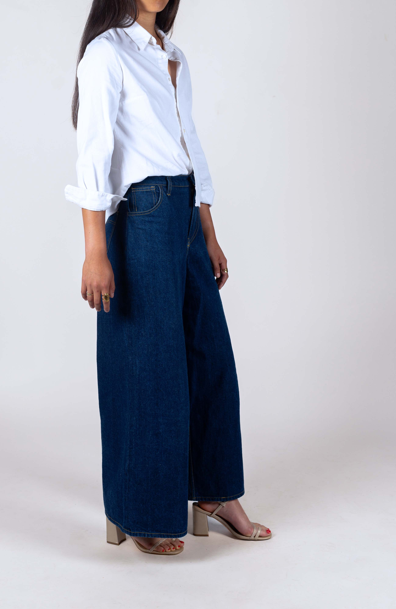
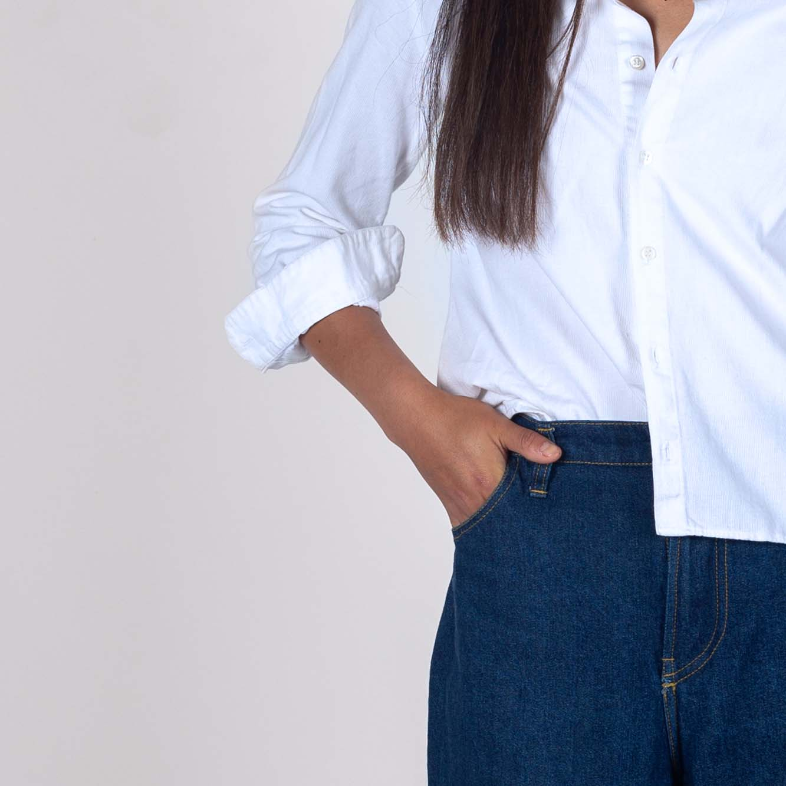
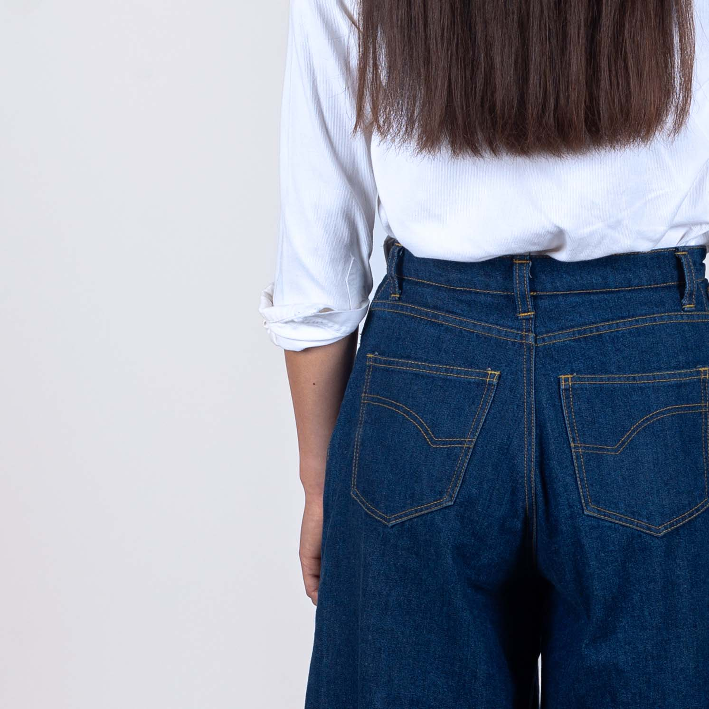
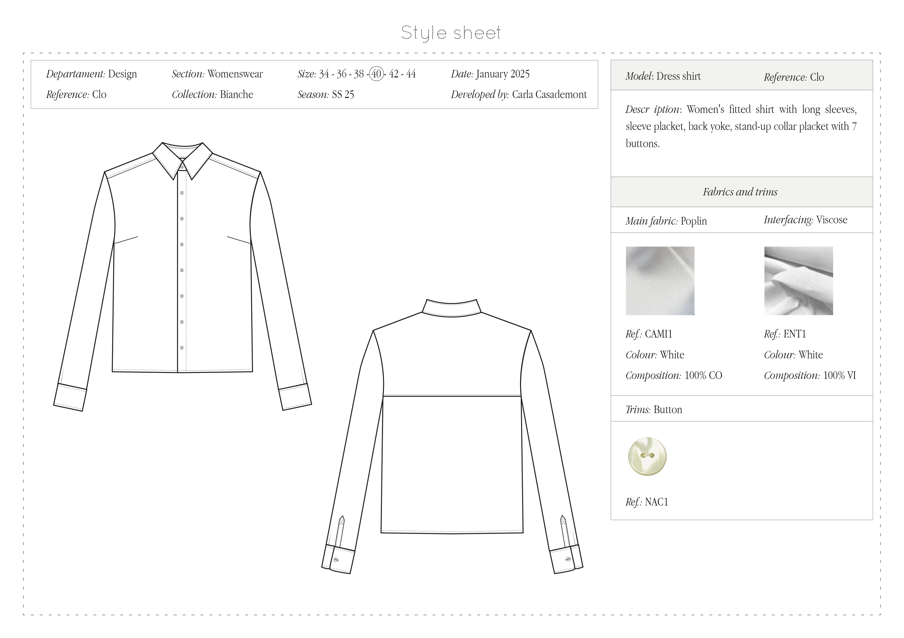
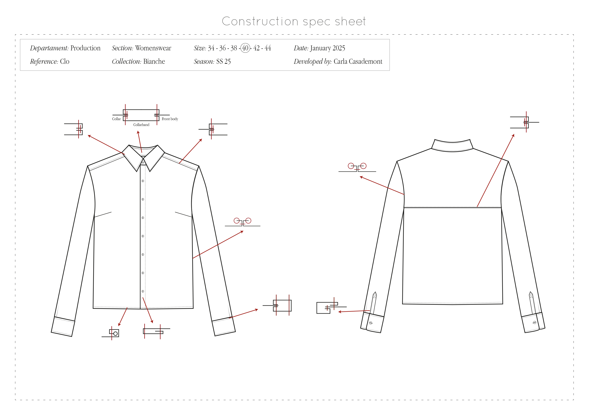
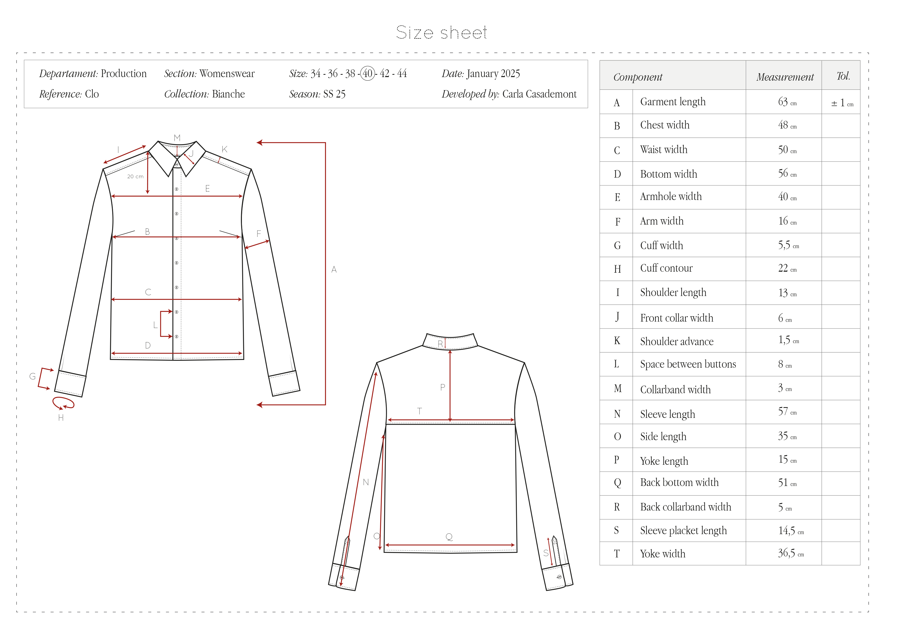
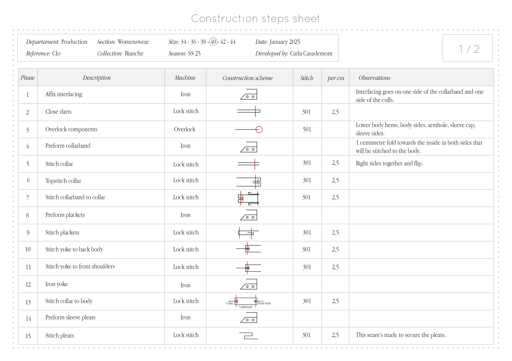
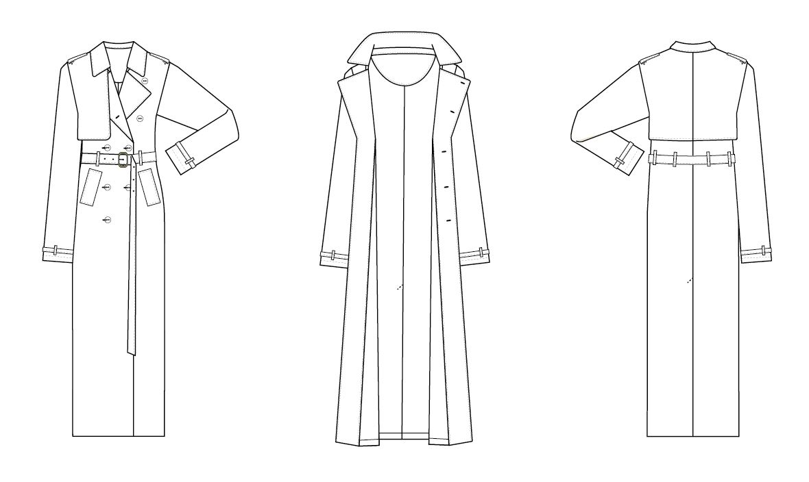
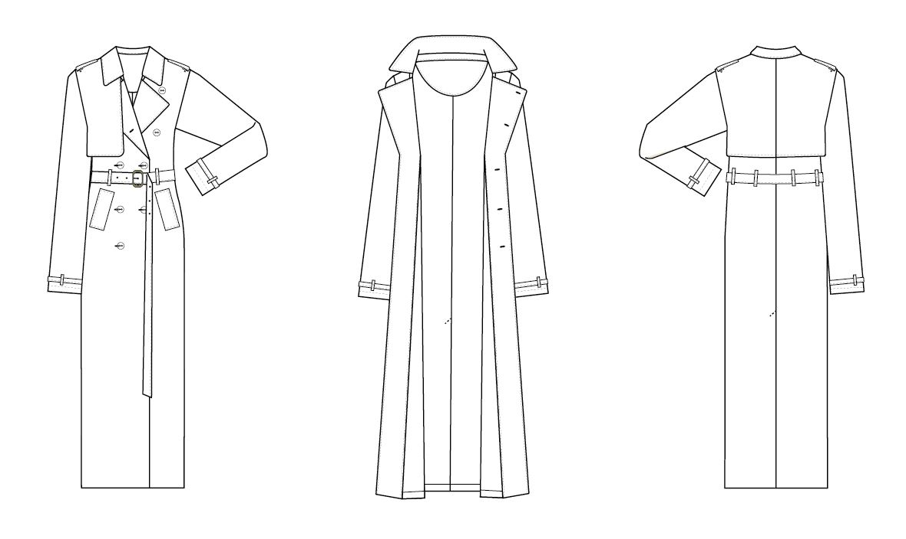

Tailoring & Dressmaking








Disseny, Patronatge i Confecció
Having spent her youth surrounded by sparkly maillots, roller skates, and all kinds of crafting activities, Carla has always admired any and every type of manual labor. Although she took a long walk down the academic route, after graduating with a bachelor’s degree in Philosophy, she decided to return to her roots and pursue a career in the fashion industry, more specifically in behind-the-scenes work.
With that purpose in mind, she obtained a professional diploma in patternmaking and dressmaking while developing skills in embroidery and manual needlework. Her many years of competitive artistic roller skating, along with her perfectionist personality, shaped her into a rigorous, organized, and responsible individual. All these skills translate directly to the workplace, as she is meticulous, dynamic, and determined to overcome challenges.
While her main focus lies in the construction and embellishment of garments, she also enjoys the creative process of designing (clothes, patterns, accessories...) as well as the calculated and focused art of patternmaking. Carla demonstrates a particular ability to observe and interpret the demands and requirements in place in every project, resolving those needs in her work.
This portfolio offers insight into herself and her work. She is excited to embark on her career and is eager to keep learning as much as possible.


 


Inspired by my childhood in a coastal town, this embroidery project aimed to capture the gleaming aura of the sea in a creative and imaginative way, as if you were taking a look from the inside of a submarine.
With some non-conceptual elements and various marine creatures, I took this exercise as an opportunity to let my mind wander and work without a specific plan - something that is quite challenging for me. The preparation involved a light sketch of the main figures and the composition of a small colour palette. This way, I had some source to guide the creation process, but most of the filling elements, colours and beading work were decided on the go as I stitched.
Even though I had some prior experience with embroidery, this project truly deepened my passion for hand-stitching in general. I’m eager to continue learning and to experiment with all kinds of techniques.